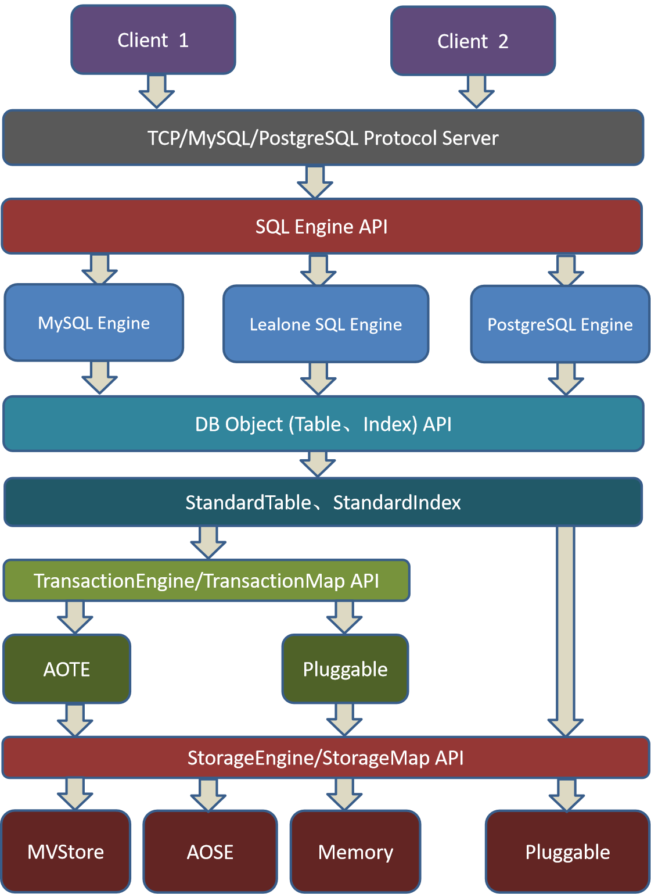

Lealone 既可以作为一个独立的数据库来使用，也可以当成一个微服务框架来用，或者两者同时用。
快速入门
从源码构建 Lealone 数据库
使用 MySQL 或 PostgreSQL 的客户端和 SQL 语法访问 Lealone 数据库
SQL Grammar
Functions
Data Types
使用 RPC 框架来开发 web 应用
使用 Lealone 脚手架创建微服务应用
使用 Lealone 开发单机和分布式微服务应用
使用 JavaScript 在 Lealone 中开发微服务应用
同时使用 Java 和 JavaScript 开发微服务应用
Lealone ORM 框架快速入门
使用 Lealone RPC 和 ORM 框架开发一个全栈微服务应用
复制集群搭建
Sharding 集群搭建
单机模式、复制集群模式、Sharding 集群模式
开发文档
架构图
